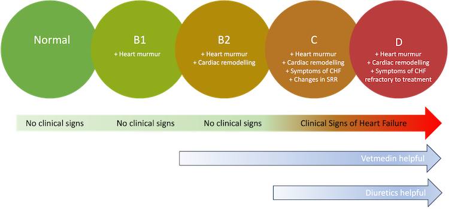

The different stages of Degenerative Mitral Valve Disease.
❤️ What are these ACVIM categories I have heard about? Why does my vet go on about them?
Published on: July 1, 2025
Reviewed on: July 1, 2025
So veterinary cardiologists now use a set of stages to help describe the stages of disease your pet goes through with Degenerative Mitral Valve Disease (DMVD). These stages are very important because the help guide your vet and you about what to be doing from a treatment and management point of view.

- Stage A just refers to at risk dogs due to their genetics. So given we have no true genetic tests yet for the condition is not really used in practice, and I have ignored it below. You can put certain dog breeds into this category, such as the cavalier king charles spaniel, given the very high prevalence rate of the disease in this breed. But clinically this has little practical use.
- Stage B refers to dogs that have a heart murmur and evidence of valve deterioration on echocardiography - but no symptoms. In particular, this is the stage after a murmur is audible but before congestive heart failure develops. It is crucially split into B1 and B2 subcategories
– Stage B1 is where the heart is normal sized and compensating for the leak just with additional heart muscle contraction and effort.
– Stage B2 is where the heart is getting bigger in size, known as remodelling, entering the vicious cycle part of the process where the mitral valve annulus is getting stretched and everything is getting worse much more rapidly. - Stage C is where the heart is now failing and pressure is building up and fluid is leaking into the lungs, congestive heart failure. Crucially, this is treatable and diuretics are usually used to counteract the congestion, reduce the pressure and clear the fluid. It is still considered stage C now ongoing even if the heart failure is under control.
- Stage D is refractory heart failure, where high levels of diuretic are now needed to counteract the heart failure.
This classification was proposed by the American College of Veterinary Internal Medicine (ACVIM) and is now widely adopted, but differs from the way human heart failure is often described.
So how does this matter to my pet?
The great news is that there are multiple ways we can treat DMVD. It all depends a lot on the stage of the disease though.
Stage B1
In stage B1, the heart is coping well on its own. So there is no benefit to giving it any more help. There is currently no medication available proven to slow down the myxomatous degeneration of the valve and glycosaminoglycan accumulation.
I personally recommend an omega-3 fatty acid supplement at this point, such as fish oil or salmon oil. This appears to be helpful in many areas of health especially the heart, and may possibly slow the valve degenerative processes.
Stage B2
Stage B2 is much more important because at this stage the heart muscle is starting to struggle to cope on its own. Cardiac remodelling starts to occur, as an attempt to boost heart pumping capacity. But as the heart gets larger the valve gets leakier, as it is stretched. Outwardly your pet will seem just the same, as cardiac output is maintained and pressures stay normal.
But the important difference from sage B1 is now medication can help. Pimobendan is now a proven option to boost the heart muscle function and stop this vicious cycle from continuing. This is now sold under multiple different brand names (Vetmedin and Cardisure in the UK).
- Amazingly, we can often see the size of the heart shrinking back when starting this drug.
- The main piece of scientific research backing up this treatment, know as the EPIC study (1), demonstrated an average of 15 months extra time spent in the pre-clinical stages for those dogs receiving it, which is an amazing result as it demonstrates additional length of life and additional quality of life with minimal side effects.
- It does this by boosting the heart muscle function – and crucially this is of no use in stage B1 - only stage B2 and beyond.
Is anything else useful at this stage of the disease?
Currently there is no actual evidence that anything else will help.
- Some cardiologists like to recommend ACE-inhibitor drugs as well at this stage, but there is definitely a multitude of opinion and little fact available here. This seems to be particularly different in the US compared to Europe, where the cost of ACE inhibitor drugs is actually much lower in the US resulting in much wider use.
- Personally, working in the UK where ACE inhibitors are expensive, I see little benefit from their addition at this stage and few UK based cardiologists advocate their use.
Stage C
Stage C is where the symptoms first appear. This can be preceded by a gradual reduction in exercise tolerance and increased tendency to cough.
-
The most universal and reliable symptom though is breathlessness. This is by far the most likely symptom, and is seen in most dogs in active congestive heart failure as the fluid starts to leak into the lungs. Breathing is faster than normal and deeper than normal. Eventually the fluid accumulation becomes so severe that the difficulty breathing becomes life threatening.
-
Diuretics, usually furosemide and torasemide, are drugs that counteract this congestion and cause the kidneys to expel excess fluid. This works wonders initially, and usually provide rapid relief. Most dogs in stage C can still live relatively normal quality of life under the right treatment.
The onset of stage C and the need for diuretics is best spotted by counting the sleeping respiratory rate (SRR). This can provide an early warning for congestive heart failure and is a crucial thing you can easily do at home to help monitor your dog and decide when it might need treatment. Have a look at our separate article here. Be aware though, if your dog is in stage B1 or early B2 it could be months or years before CHF symptoms appear, so don’t flag in your efforts too early.
- My recommendation would be to count the SRR about once weekly in stage B1, 3 times weekly in stage B2, and every day if you have concerns that stage C is imminent or your pet has recently been struggling.
- In addition to diuretics your pet may also benefit from ACE inhibitors. These block the renin-angiotensin system and this is a hugely complex topic.
- The actual clinical benefits to dogs are relatively inapparent still and many cardiologists may not use them in stage C. The downsides of additional costs and having to give even more tablets to your dog have not got any convincing evidence still of making a significant difference to outcomes.
- A drug called spironolactone is sometimes given in combination with an ACE inhibitor.
Over time your pet is likely to need increases in the diuretic dose, as the heart increasingly struggles. This is because the valve function continues to worsen and can only be improved via surgical means. Valve surgery is a huge topic and we plan to cover this in future.
Stage D
In stage D the usual effects of modest doses of diuretic are often no longer having as much benefit. This is the very concerning stage of the disease.
Many things can still be tried at this point, so do discuss with you veterinarian or cardiologist about possible options. Such as:
- Use of torasemide rather than furosemide
- Use of injectable furosemide rather than tablets, due to better absorption into the bloodstream (known as bioavailability).
- Addition of other drugs, such as ACE inhibitors, spironolactone and thiazide based diuretics.
- Surgical procedures: Along with valve surgery several catheter techniques are in development, such as transcatheter edge to edge repair (TEER) and even deliberately puncturing the atrial septum.
How are these stages actually diagnosed?
There are several ways of judging these different stages.
Stage B1 and B2 are really only distinguishable on an echocardiogram. Radiographs (X-rays) of the chest are useful but very insensitive compared to an echo even in relatively expert hands. This is why it is particularly important to have an echo done in the early stages of the disease, and to keep on having one as recommended by your cardiologist at least until stage B2 develops.
Stage C can be tricky and is still best done via an echo or radiographs. However in particular the sleeping respiratory rate (SRR) has been shown to be one of the best measures, even when compared head-to-head against echocardiography and x-rays.
Stage D is very much a clinical diagnosis based on the treatments your pet is on and the severity of the symptoms.
Check out my video on the same topic if you want a more in depth explanation:
References:
(1) Boswood A et al. Effect of Pimobendan in Dogs with Preclinical Myxomatous Mitral Valve Disease and Cardiomegaly: The EPIC Study-A Randomized Clinical Trial. J Vet Intern Med. 2016 Nov;30(6):1765-1779